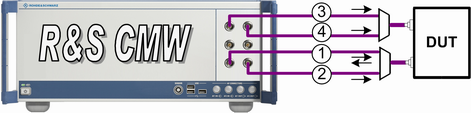

Test Setup for Dual Carrier Dual Band RX Diversity
The test setup for "Dual Carrier Dual Band RX Diversity" scenario uses four different TX modules for the downlink direction.
If internal fading has to be used, the test setup allocates two internal faders.
If external fader has to be used (e.g. SMW200A), the test setup is the same as for the scenario with external fading.
The following figure illustrates which paths the RF signals use. Fader signal consists of fading superimposed on the original downlink signal.

Test setup for dual band RX diversity (basic frontend)
1 = uplink plus faded downlink signal of the carrier one to the first antenna of the UE
2 = faded downlink signal of the carrier two to the first antenna of the UE
3 = the second downlink path of the faded carrier one to the second antenna of the UE
4 = the second downlink path of the faded carrier two to the second antenna of the UE
The instrument with advanced frontend supports also a setup without combiners using only two TX connectors. The following figure illustrates this example.

Test setup for dual band RX diversity (advanced frontend)
1 = UL plus faded DL1 and DL2 to the first antenna of the UE
2 = the second downlink path (fading, DL1, DL2) to the second antenna of the UE